Product designer working across research, interaction and visual design — currently building the authenticated, multi-user side of a live platform for university capstone coordinators.
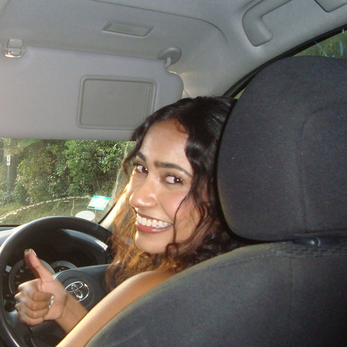
I'm a final-year Computer Science and Commerce student at the University of Auckland. I design and build interfaces for systems with real complexity underneath them — authentication, multi-user roles, live client feedback — and work closely with the engineers who ship them. Below is a walkthrough of my main project, plus a few smaller pieces of design work.
Case study
Capstone coordinators across different universities had no shared place to find each other, share project models, or coordinate across institutions. Our client asked for a web platform that could support registration, member profiles, and role-based authenticated functionality for a growing, distributed user base — not a marketing site, but a working tool people would return to.
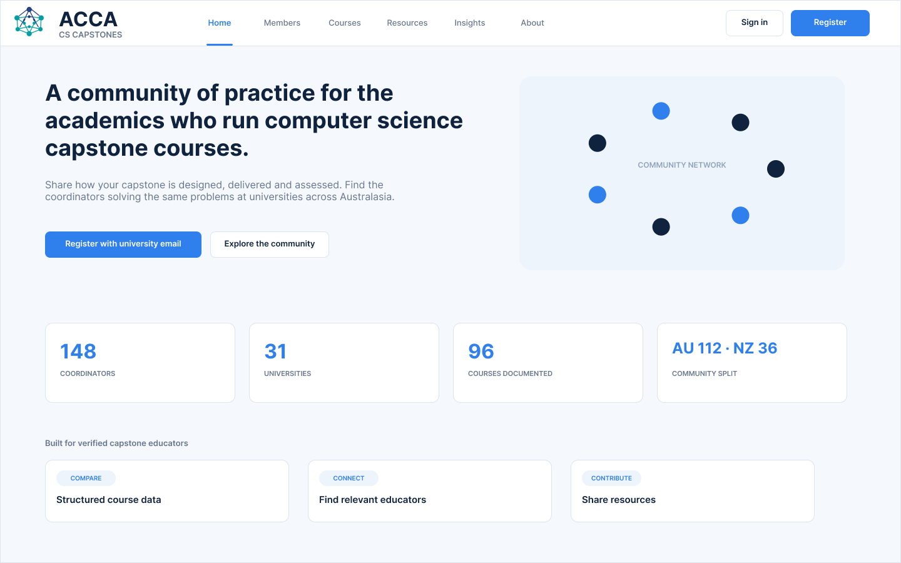
Requirements came from regular meetings with the client, not a brief handed to us upfront. I translated what coordinators told us they needed — clear onboarding, trustworthy authentication, an easy way to find and manage their own listings — into concrete interface decisions, then checked those decisions against the client's feedback each iteration.
Registration was the sharpest example. Coordinators register with a university email, but institution names and email domains don't always match what a person expects. Rather than let a mismatched domain fail silently or bounce someone out of the flow, I designed the validation to surface inline, with a specific, correctable message.
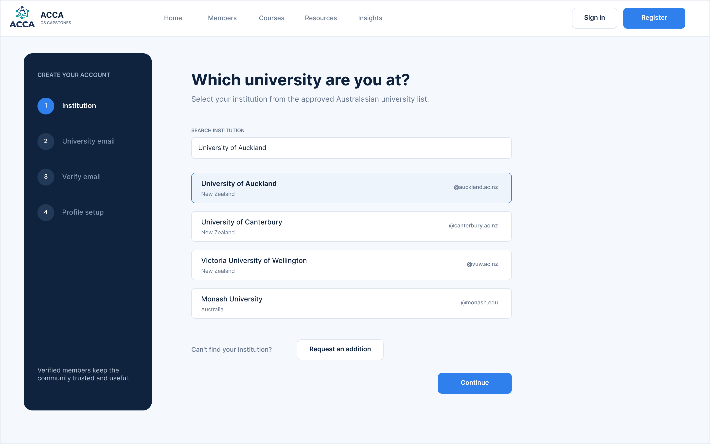
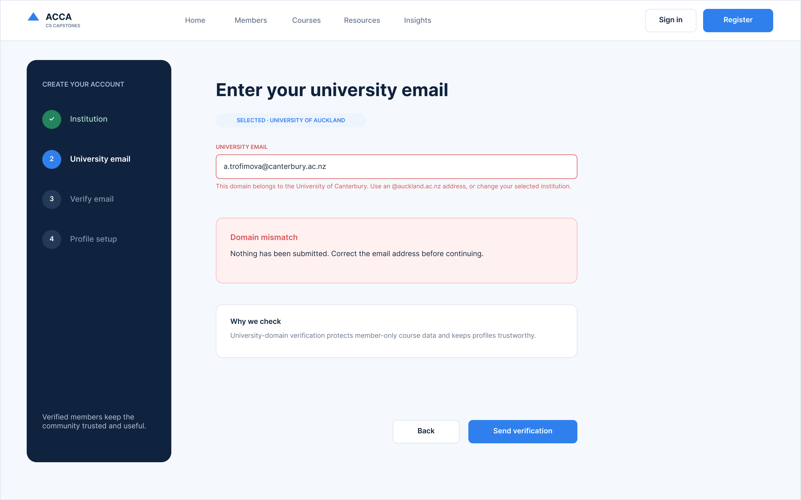
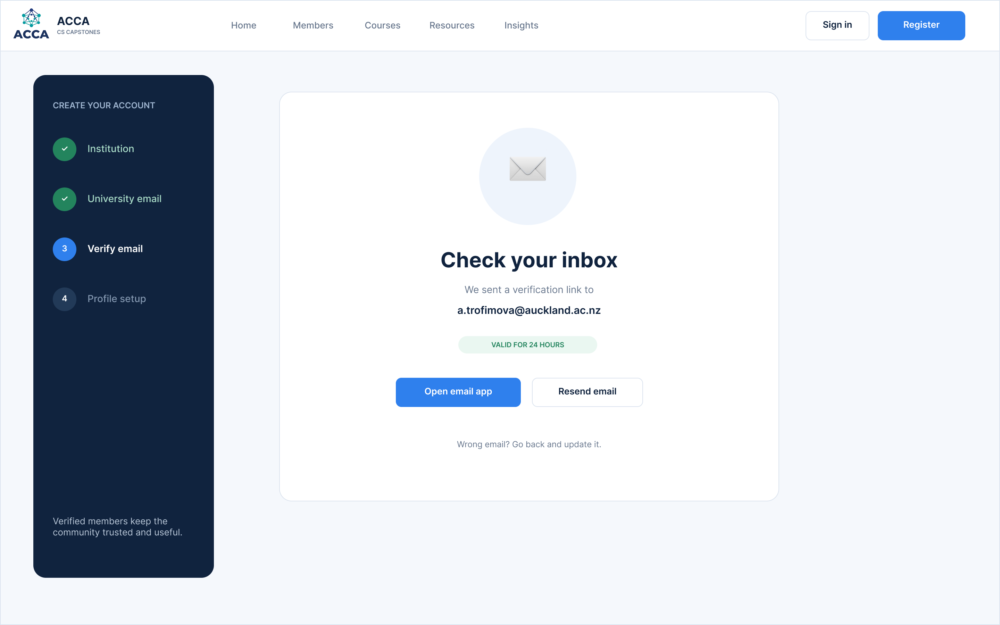
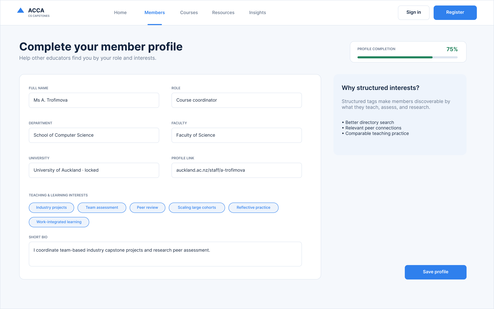
Beyond the visual design, I own how the interface communicates access itself. Course content behaves differently depending on whether someone is a guest, a member with an incomplete profile, or a fully verified member — rather than hide that logic, I designed the interface to state it plainly, with a clear next action for each state.
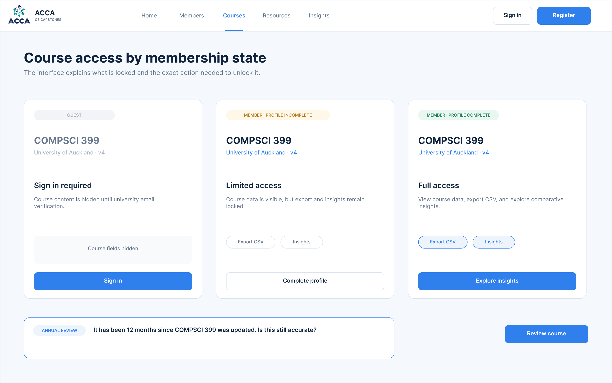
I see designs through to the React front end, integrated with AWS Cognito. Working this close to implementation shaped how I design — I know what's easy to build responsively and what isn't, and I design with that in mind rather than handing off screens I haven't tested against the real constraints.
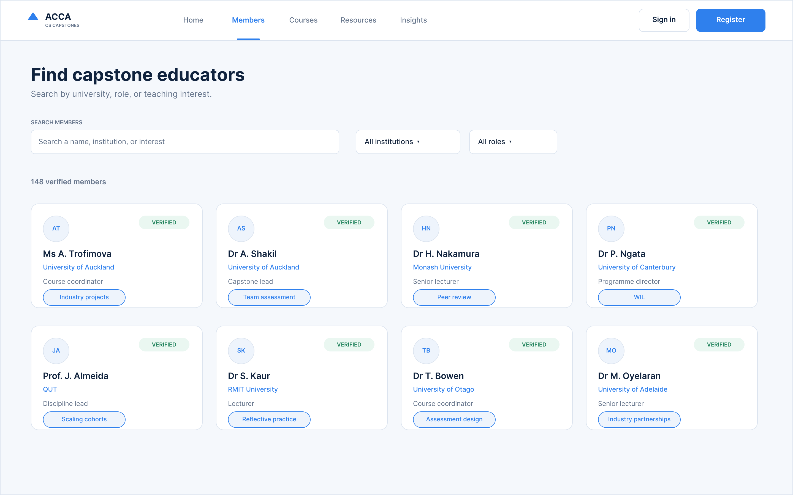
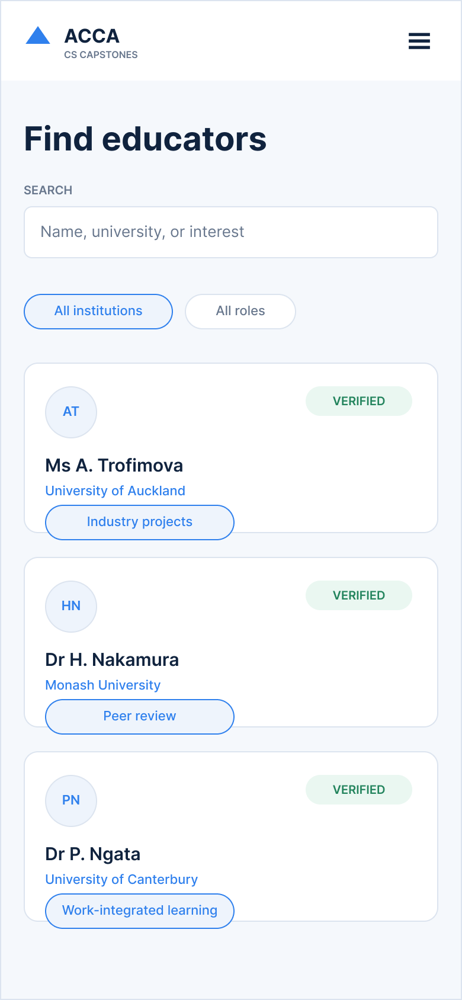
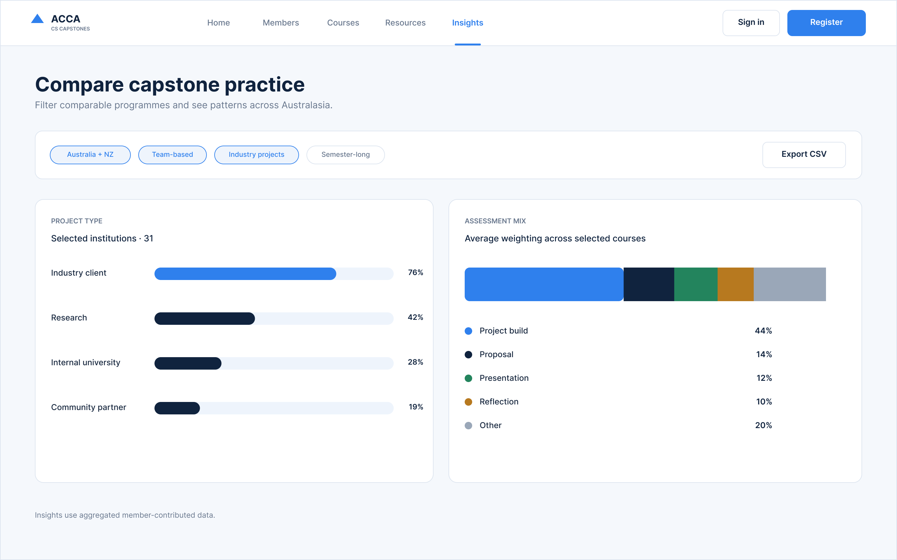
If I could revisit one decision, it'd be mobile navigation. The current pattern works, but it wasn't designed with the same care as the desktop flows, and it shows on smaller screens. It's actually something the team is actively reworking right now — a good reminder that responsive design needs the same iteration as the first pass, not just a scaled-down version of it.
A KiwiSaver fund landing page and registration flow, designed against specific principles rather than general instinct: Gestalt figure-ground and proximity, Nielsen's recognition-over-recall, and accessible form structure with labelled fields and strong colour contrast throughout.
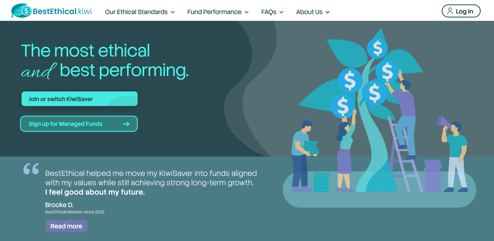
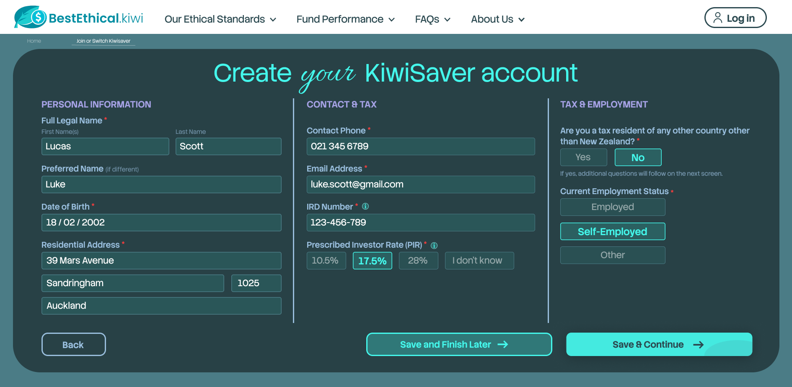
An interactive interface prototype built around a small reusable component system, with navigation and interaction decisions driven directly by user-needs analysis — a complex enough workflow that it's best explored directly rather than as static screens.
View the live Figma file →
Password: SafFigma
ZEIL is a swipe-based job discovery app: candidates page through matches with Pass, Save or Apply actions, while an AI-driven fit score surfaces the specific skill separating them from a stronger match. I contributed product ideation and interface design within a multidisciplinary hackathon team, taking the prototype from onboarding through to application tracking under a tight pitch deadline — landing Top 5.
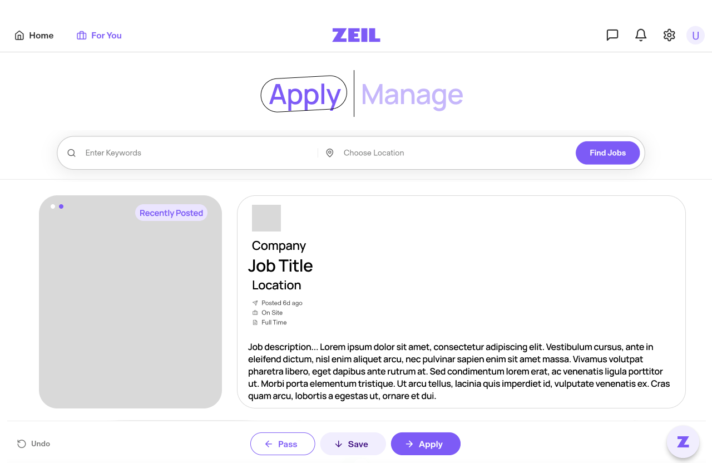
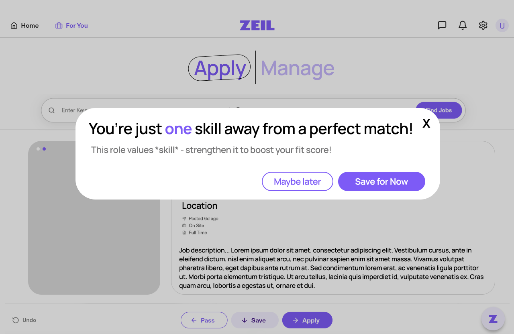
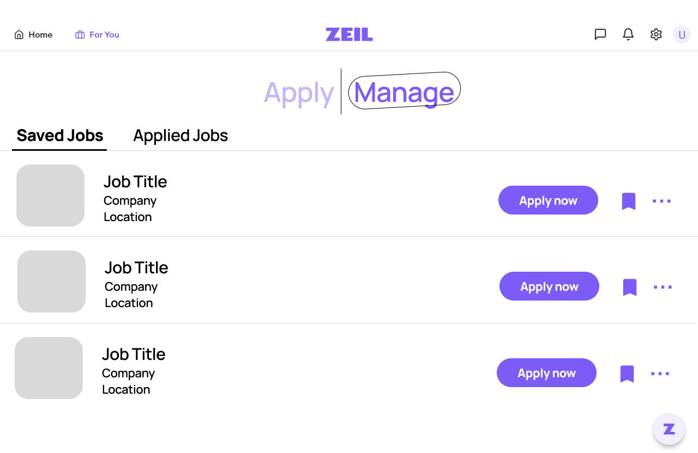